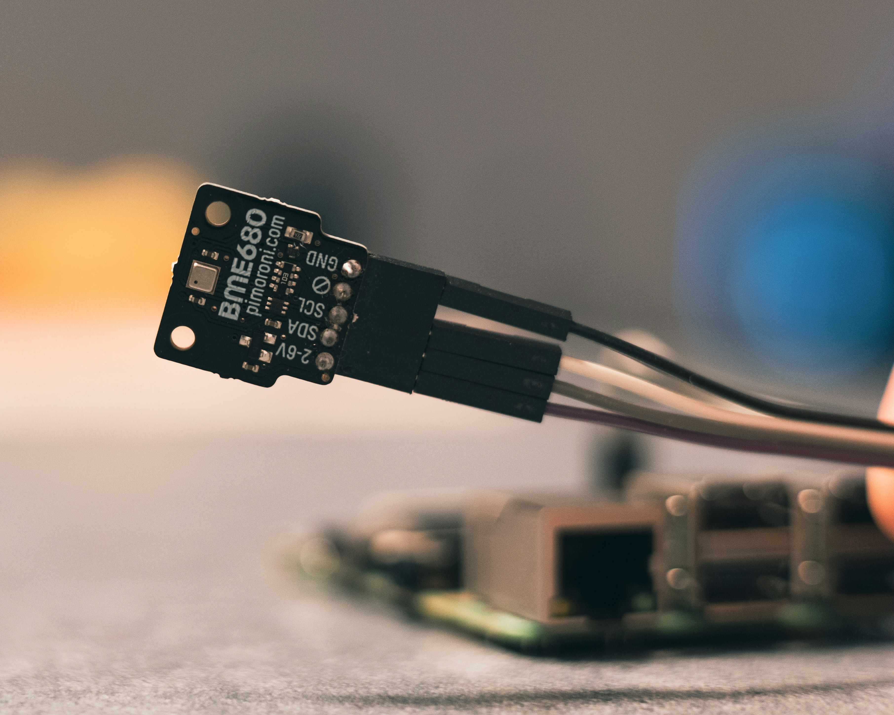

TECNOLOGIAS
Ferramentas do Futuro

Drone Agrícola
Monitora plantações, detecta falhas e auxilia na pulverização.

Sensores IoT
Coletam dados sobre solo, clima e produtividade.

Satélites
Fornecem imagens e informações climáticas.

Trator Autônomo
Executa tarefas com precisão e eficiência.